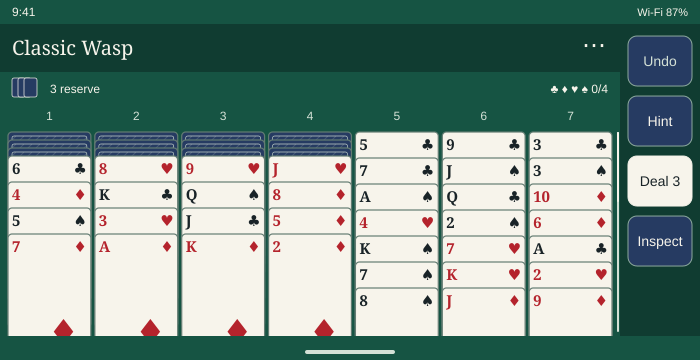
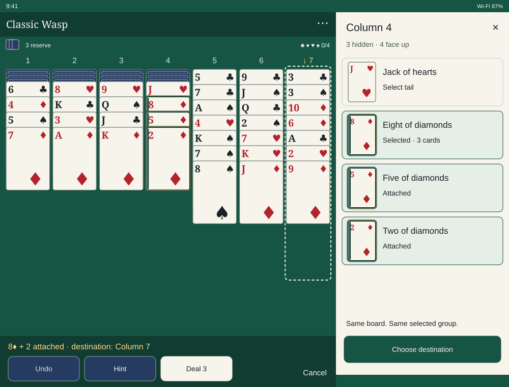
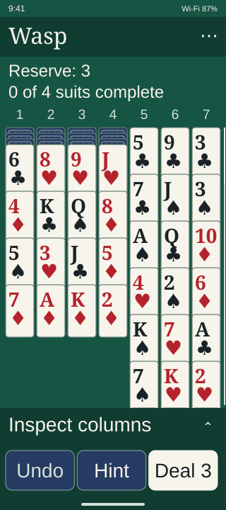
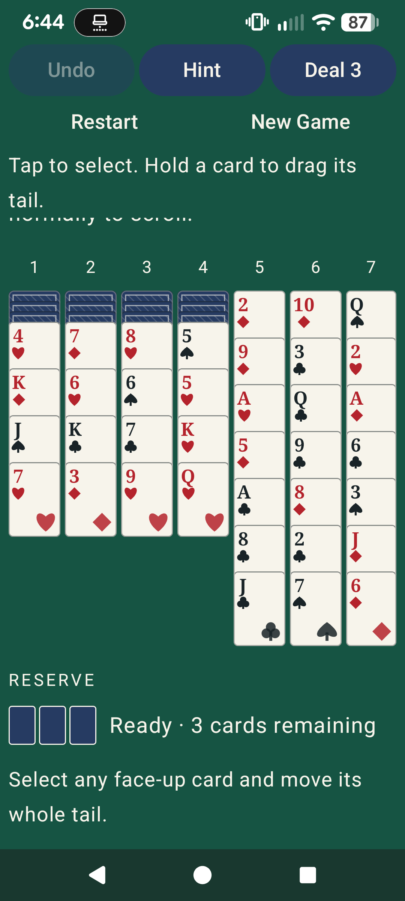
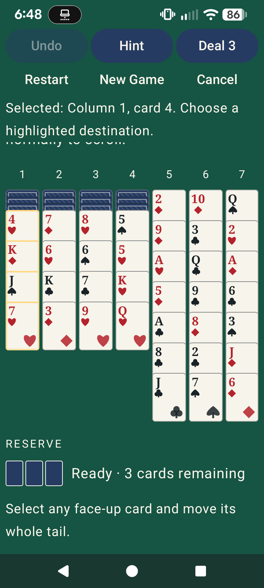

Modern classic — unapproved Phase 4D proposal
Illustrations, not implemented screens. Seed 123; seven columns; unchanged Classic Wasp rules.
Portrait board and selected tail
 376 × 835dp; card labels illustrated at 130%.
376 × 835dp; card labels illustrated at 130%. 8♦ with 5♦ and 2♦ attached; Column 7 is a legal destination.
8♦ with 5♦ and 2♦ attached; Column 7 is a legal destination.Inspection and explicit destination
 Default text illustration; rows grow with text scaling.
Default text illustration; rows grow with text scaling. Destination selection followed by an explicit move action.
Destination selection followed by an explicit move action.Short landscape

Tablet with inspection panel

Narrow phone at 200% text

Actual Phase 4C Pixel 7a evidence

Actual app, 1080 × 2400px, font scale 1.3. Globally scrolled viewport; not a normalized initial screen.
Actual 4♥ selection. This is a different selection from the proposal.